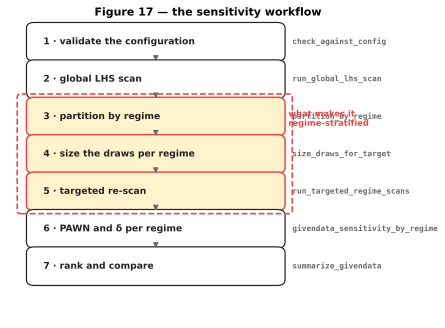
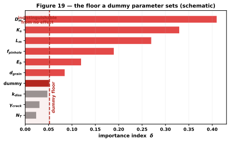
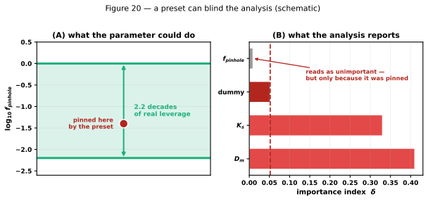

Part IV — The sensitivity workflow¶
Which parameters the answer depends on, and how strongly — asked separately inside each physical regime, because the answer is different in each.
Why it is stratified¶
A global sensitivity analysis over the whole parameter space answers a question nobody asked. The parameters that matter in a metal-limited wall are not the ones that matter in an oxide-limited one, and a single ranking over both is an average of two different physics weighted by how often the sampler happened to land in each.
So the workflow partitions first and ranks second. Every index in this part is conditional on a regime, and a ranking quoted without its regime is not a result.
Important
The partition is not free. On the default ranges an unaimed sample lands almost entirely in one regime, leaving the others with too few draws to support an index at all. The regime presets are what create the study — see stage 4 and Figure 18.
The pipeline¶


Figure 17. Read top to bottom. Look at the three shaded stages: partitioning by regime, sizing the draws, and re-scanning per regime are what make this workflow different from an ordinary global sensitivity analysis.¶
Stage |
Purpose |
Code |
|---|---|---|
Catch a configuration that disagrees with itself, before spending hours |
|
|
One space-filling pass that feeds both the partition and the indices |
|
|
Split the sample by which process limits the flux |
|
|
Measure each preset’s yield, then re-scan each regime to size |
|
|
PAWN and δ per regime, read against a dummy floor |
|
The two estimators, and what was rejected¶
Both estimators in use are given-data: they are computed from a sample that already exists, needing no special sampling design and no further model evaluations.
Estimator |
Measures |
Source |
|---|---|---|
PAWN |
distance between the conditional and unconditional output distributions |
Pianosi & Wagener (2018) |
δ |
Borgonovo’s moment-independent importance measure |
Borgonovo (2007) |
Neither decomposes variance. That is the point: both remain meaningful for outputs whose variance is a poor summary, and flux here spans around ten decades.
Note
Morris and Sobol were removed, not merely unused. Both require their own structured sampling design, which cannot be stratified by regime after the fact — the design has to be built around the regime, and the regime is only known once the model has run. A variance decomposition over a ten-decade output also attributes most of the variance to whichever parameter happens to span the widest range. The given-data route was kept because it survives both problems.
Reading a ranking honestly¶
Three ways to misread the output, each with a figure.
The dummy parameter sets the floor¶
A parameter the model never reads is carried through the whole analysis. Whatever index it earns is noise, so it defines the floor: anything at or below it is indistinguishable from having no effect.


Figure 19. Schematic. Look at the shaded band below the dummy: every parameter in it is reporting noise, however confident the bar looks.¶
Below the floor does not mean “no physical effect”¶
A parameter pinned by the preset that created the regime has no variance, so it can earn no index. The number is correct and the conclusion drawn from it is wrong.


Figure 20. Schematic. Look at the gap between the two panels: the parameter on the left has 2.2 decades of leverage, and on the right it reads as unimportant — purely because the preset held it fixed. Always read a ranking against the preset that produced it.¶
High dimensionality is a flagged risk¶
PAWN has documented failure modes (Puy, Lo Piano & Saltelli, 2020), and with tens of
parameters the conditional samples thin out quickly. The workflow reports cluster sizes
for this reason; a cluster under min_cluster (300) is not analysed.
What is varied, and what is not¶
Varied |
Held fixed |
|---|---|
Transport properties, microstructure, defects, surface kinetics, operating point |
Which study is active; the sorption laws; the model structure |
Switching study is not a sensitivity axis. Material systems have disjoint parameter sets, so a sweep across them would not be a sweep of one quantity.
Where to go next¶
Start at stage 1, which is the cheapest hour you will spend.
The regime labels themselves: Level 5 — the full system.
Why
eta_surfis not analysed by default: Appendices B.2.The original how-to, kept for its worked walkthrough: How to run a regime-stratified sensitivity analysis.